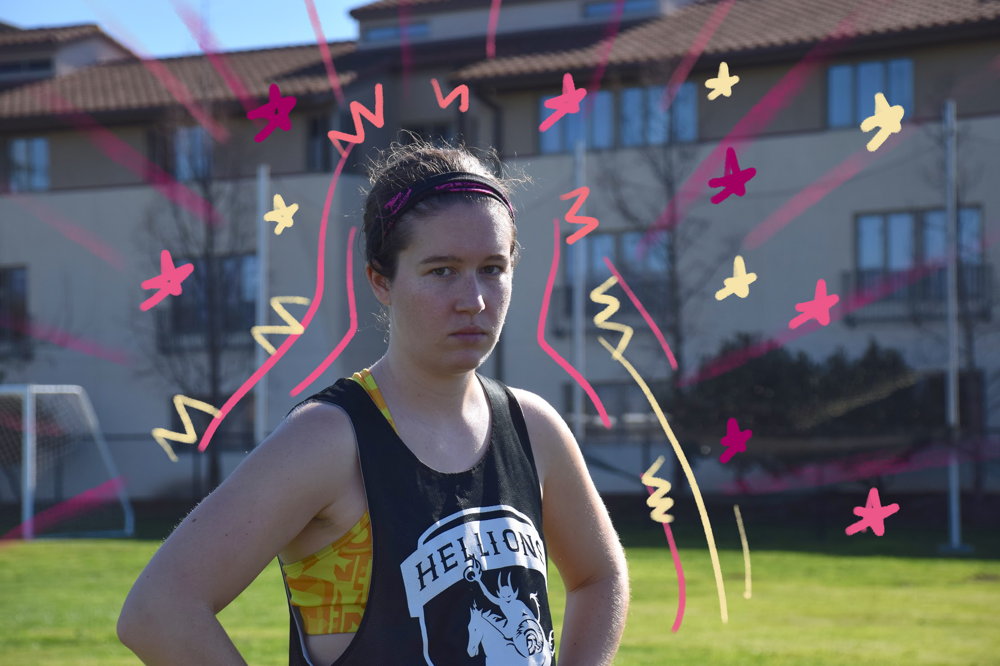

Mia "Crunch" Tess (#99)
Year: SeniorMajor: BFA Film & TV Production, Minor in Entertainment Industry
Hometown: Canton, MA
Favorite celebratory song: I’m Not Alright by Bryce Vine (the title is deceiving)
Pre-tournament ritual: Shave the leggies to be max aerodynamic
Best feeling in ultimate is when... we fly up the break side, everyone gettin touches on the disc for a sweet score
if you could eat one food for the rest of your life, what food would it be? Noodlezzz
team jacob or team edward? Team jacob

Major: Mechanical Engineering
Hometown: Los Gatos, CA
Favorite celebratory song: Tia Tamera (ft. Rico Nasty) by Doja Cat
Pre-tournament ritual: Slam a cold brew and put on some sunscreen
Best feeling in ultimate is when... you're on the field playing a sport you enjoy with some of your closest friends. oh and when you score
if you could eat one food for the rest of your life, what food would it be? potatoes
team jacob or team edward? team renesmee
Caitlin "Kenny" Buckley (#73)
Year: SeniorMajor: Mechanical Engineering
Hometown: Los Gatos, CA
Favorite celebratory song: Tia Tamera (ft. Rico Nasty) by Doja Cat
Pre-tournament ritual: Slam a cold brew and put on some sunscreen
Best feeling in ultimate is when... you're on the field playing a sport you enjoy with some of your closest friends. oh and when you score
if you could eat one food for the rest of your life, what food would it be? potatoes
team jacob or team edward? team renesmee
Anjali "Chuck" Gopinathan (#2)
Year: FreshmanMajor: Computer Engineering and Computer Science
Hometown: San Diego, CA
Favorite celebratory song: Africa by Toto
Pre-tournament ritual: eat a sumo orange or any orange
Best feeling in ultimate is when... We get a D and our whole line transitions really smoothly and quickly to offense and we score
if you could eat one food for the rest of your life, what food would it be? Peanut butter toast with strawberries, bananas and blueberries
team jacob or team edward? Jacob I guess

Jessica "Yoshi" Li (#3)
Year: JuniorMajor: Media Arts + Practice, Communication Design Minor
Hometown: Westchester, NY
Favorite celebratory song: Revenge by TryHardNinja
Pre-tournament ritual: become swallowed in self doubt and then realize that frisbee is fun!
Best feeling in ultimate is when... you have a sit down meal with your homies after a long day of ultimate frisbee
if you could eat one food for the rest of your life, what food would it be? Flamin' Hot Cheetos Limon
team jacob or team edward? team edward (he glisten, i listen)

Georgia "Squidward" Cardosa (#7)
Year: SophomoreMajor: Environmental Engineering
Hometown: Austin, TX
Favorite celebratory song: Tokyo Drifting by Glass Animals & Denzel Curry
Pre-tournament ritual: fill up dat gas tank
Best feeling in ultimate is when... everyone hustles their bustles
if you could eat one food for the rest of your life, what food would it be? breakfast tacos
team jacob or team edward? i like me a hairy man

Ivy "Lotto" Tsang (#11)
Year: SophomoreMajor: Iovine and Young Academy
Hometown: Hong Kong
Favorite celebratory song: Waltz of the Flowers by Tchaikovsky
Pre-tournament ritual: banana and egg
Best feeling in ultimate is when... LAYOUT.
if you could eat one food for the rest of your life, what food would it be? eggs bro
team jacob or team edward? neither. team jon snow

Toko "Rojo" Weaver (#15)
Year: SophmoreMajor: Chemical engineering
Hometown: Seattle, WA
Favorite celebratory song: REEL IT IN by Amine
Pre-tournament ritual: Eating (preferably a bagel with cream cheese)
Best feeling in ultimate is when... scoring after playing a really long point
if you could eat one food for the rest of your life, what food would it be? Bagel with cream cheese
team jacob or team edward? Team edward

Amanda "Geegee" Zhang (#16)
Year: FreshmanMajor: Computer Science and Business Administration
Hometown: Fremont, CA
Favorite celebratory song: Here With Me (ft. Nevve) by ARMNHMR
Pre-tournament ritual: coffee n hype music
Best feeling in ultimate is when... you snag that deep cut!
if you could eat one food for the rest of your life, what food would it be? nectarines
team jacob or team edward? sixth grade geegee wouldve said team edward and i gotta say i STILL AGREE

Juliana "Neptune" Tichota (#17)
Year: JuniorMajor: Chemical Engineering
Hometown: Skokie, IL
Favorite celebratory song: Spongebob Intro Song, Hellions Edition!
Pre-tournament ritual: chugging water, high-fiving literally everyone, stretching a lot, missing my alarm
Best feeling in ultimate is when... not getting roasted upline... not getting roasted deep... not getting roasted in endzone... not getting roasted!
if you could eat one food for the rest of your life, what food would it be? Brownies
team jacob or team edward? none of the above
Julie "Thumper" Xue (#18)
Year: FreshmanMajor: Astronomy
Hometown: Shenzhen, China
Favorite celebratory song: place je passe -- Mozart Opera Rock
Pre-tournament ritual: sleep like I haven't slept in a year and stare blankly out of the car window
Best feeling in ultimate is when... *spoiler alert*: layout in our ~cheers~
if you could eat one food for the rest of your life, what food would it be? Ice cream. I mean let's keep it general so I get choices
team jacob or team edward? I am not cultured and have not watched Twilight but Edward

Emily "Snap" Lieberman (#22)
Year: FreshmanMajor: Political Science + Dance Minor
Hometown: Berkeley, CA
Favorite celebratory song: No Problem - Chance the Rapper
Pre-tournament ritual: full send DANCE PARTY, and gorging on bagels when a field has the good ones
Best feeling in ultimate is when... everything just works
if you could eat one food for the rest of your life, what food would it be? Boba...does that count? Wait hold up, 100% boba and burritos. Sorry, not choosing one
team jacob or team edward? Team Edward I guess? However, I'd like to abstain from this vote
Marie "Flounder" Zaragoza (#23)
Year: SophomoreMajor: International Relations & Economics
Hometown: Coeur d'Alene, ID
Favorite celebratory song: Love on Me -- Galantis
Pre-tournament ritual: Hydrate and watch Callahan videos to get HYPE
Best feeling in ultimate is when... You make a friend on the opposing team and make jokes or complain together
if you could eat one food for the rest of your life, what food would it be? Gyros, for sure!
team jacob or team edward? Honestly Team Alice at this point. To be fair, I am still in the middle of watching the series though so maybe that'll change.

Sydney "Monty" Mayer (#28)
Year: JuniorMajor: Biomedical Engineering, Minor in Applied Analytics
Hometown: Denver, CO
Favorite celebratory song: Defying Gravity by Idina Menzel & Kristin Chenoweth
Pre-tournament ritual: Be prepared and buy too many snacks, then procrastinate and only pack in the last 20 minutes before we leave, play the same exact playlist on every car drive ever
Best feeling in ultimate is when... You work really really hard and then get a D on the person you are defending. Or when you are forced to run around in the cup and it finally pays off and they turn it!
if you could eat one food for the rest of your life, what food would it be? Fruit platter cause then I cheat the system and get more than one food =P
team jacob or team edward? Edward. Or Alice.
Karen "Koopa" He (#40)
Year: FreshmanMajor: Business administration, minor in computer programming
Hometown: Princeton, NJ
Favorite celebratory song: High school musical's what time is it
Pre-tournament ritual: Staying in touch with my inner zen
Best feeling in ultimate is when... You want the disc so bad you do a LAYOUT D
if you could eat one food for the rest of your life, what food would it be? Sushi for sure
team jacob or team edward? Team Edward yay üôå

Sunshine "Frosty" Liu (#75)
Year: SeniorMajor: Human Biology, Dance minor
Hometown: Richmond, British Columbia, Canada
Favorite celebratory song: I Like It - Cardi B, Bad Bunny, & J Balvin
Pre-tournament ritual: Finding out how many warm things I can squeeze in my bag
Best feeling in ultimate is when... Watching the hope leave your mark's eyes when you D them- sorry, I meant to say I like the dance parties
if you could eat one food for the rest of your life, what food would it be? Boba
team jacob or team edward? Team Edward

Cate "Flood" Caporicci
Year: SophmoreMajor: Law, History, and Culture
Hometown: Spokane, WA
Favorite celebratory song: I Will Survive by Gloria Gainer
Pre-tournament ritual: Rolling out while throwing out some witty comments
Best feeling in ultimate is when... You make a bid, catch it and still manage not to tear anything
if you could eat one food for the rest of your life, what food would it be? Pad Thai
team jacob or team edward? Umm Jacob..... who do you think I am

Nikki "Diddy" Jafarzadeh
Year: SophomoreMajor: Cognitive Science
Hometown: Sacramento, CA
Favorite celebratory song: Dreaming - Smallpools
Pre-tournament ritual: some noms (ideally bagel)
Best feeling in ultimate is when... the team comes together for an incredible ~flowy~ point
if you could eat one food for the rest of your life, what food would it be? everything bagel with cream cheese, thinly sliced tomato, and some salt & pepper
team jacob or team edward? jacob

Jackie “Mater” Hall
Year: FreshmanMajor: Astronautical Engineering, minor in Astronomy
Hometown: Salt Lake City, UT
Favorite celebratory song: Valentino by 24kGoldn
Pre-tournament ritual: A good old nap
Best feeling in ultimate is when... When someone scores a point and the reward is halftime-naptime
if you could eat one food for the rest of your life, what food would it be? Easily burritos- they are a super food
team jacob or team edward? I’m going to go with Edward because he sparkles
Helen "Dingo" Burch
Year: SophomoreMajor: Biology, minor in Geobiology
Hometown: Sacramento, CA
Favorite celebratory song: Tubthumping by Chumbawumba
Pre-tournament ritual: try to take off sweats without removing cleats
Best feeling in ultimate is when... a hype pump up cheer is immediately followed by a hype point
if you could eat one food for the rest of your life, what food would it be? milk
team jacob or team edward? eddie

Alexis “Lars” Tran
Year: JuniorMajor: Film and Television Production
Hometown: Milpitas, CA
Favorite celebratory song: I Feel Good - James Brown
Pre-tournament ritual: Sleep
Best feeling in ultimate is when... Somebody gets the D!
if you could eat one food for the rest of your life, what food would it be? Meatloaf
team jacob or team edward? Team Baby Yoda

Sophia "Orca" Zhou
Year: 1st year med studentMajor: Medicine
Hometown: Portland, OR
Favorite celebratory song: I Wanna Dance with Somebody
Pre-tournament ritual: buying cuties & cheez-it snack mix
Best feeling in ultimate is when... lug
if you could eat one food for the rest of your life, what food would it be? sushi
team jacob or team edward? edward

Simone "Turbo" Augustine (#44)
Year: Grad!Major: Pharmacology
Hometown: Bethesda, MD
Favorite celebratory song: That's Just The Way We Roll by the JoBros
Pre-tournament ritual: literally vibing
Best feeling in ultimate is when... you're all cheering on your teammates and you see them run even harder!
if you could eat one food for the rest of your life, what food would it be? pineapple pizza.
team jacob or team edward? who????!!!

Keren-Or Givol (#6)
Year: Graduate StudentMajor: Marriage and Family Therapy
Hometown: Los Angeles, CA
Favorite celebratory song: I wanna dance with somebody- Whitney Houston
Pre-tournament ritual: Chill, good vibes, good tunes, lots of layers, and ideally a heater in the car.
Best feeling in ultimate is when... Bookends and then being surrounded by teammates!!
if you could eat one food for the rest of your life, what food would it be? Pasta!
team jacob or team edward? Loaded debate here—Jacob ¿?